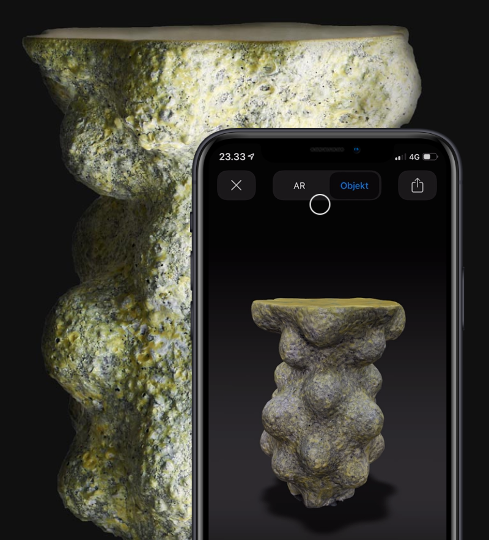

Meshmerize - a webapp for 3D scanning
From Autumn 2019 until Spring 2020 I was employed by the online design gallery Adorno ApS in order to work on the webapp Meshmerize, which was funded by Innovation Fund Denmark. The goal of the app was to automate, as much as possible, the process of creating AR-ready 3D scans of real-world objects.
There is plenty of open source software that can create a 3D point cloud from a set of images, such as Colmap, MVE etc. However, the point cloud generated is far from AR-ready, since it is not oriented and scaled properly, as well as a host of other issues, such as containing too much irrelevant information and noise. Before meshing and texturing the point cloud, these problems ideally need to be solved.
In the process of developing Meshmerize, I managed to automate the following:
- Rotation of the 3D model, so that it is aligned with z-axis.
- Translation of the 3D model, so that it is placed at the center of the xy-plane.
- Scaling to the correct real-world size of the object.
- A range of techniques for removing unwanted geometry and noise.
- Downsampling.
- Meshing
- Texturing using MVSTexturing. This step included combining all the textures into one downsampled texture file.
I used MVE for generating the point cloud, Open3D for Poisson meshing and MVSTexturing for texturing. Other than that, a lot of work was put into developing algorithms for preprocessing the point cloud before meshing it. This processing was written in Python using mainly the NumPy library, in order to accelerate numerical linear algebra calculations.
I will probably detail the algorithms I developed in a later post.